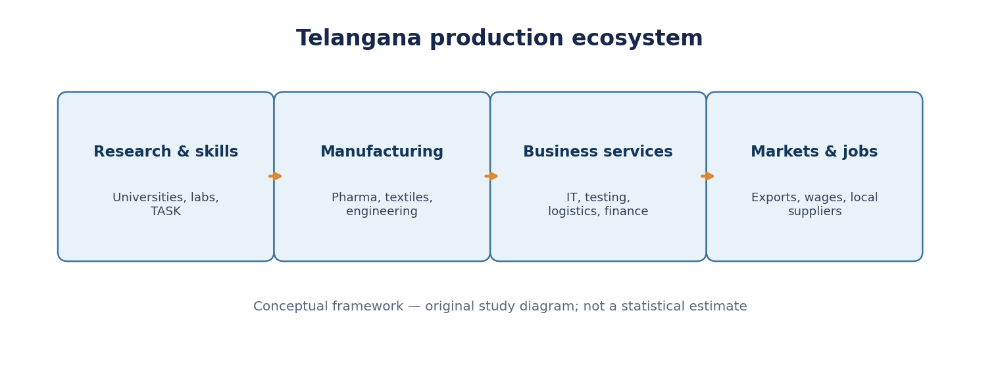
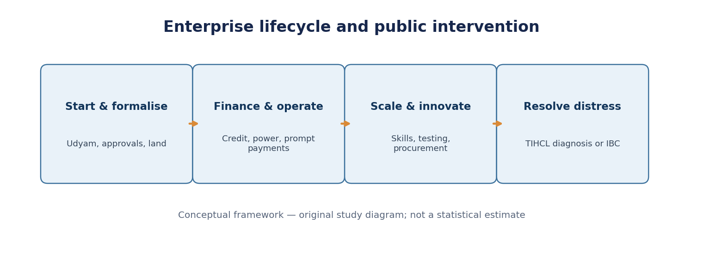
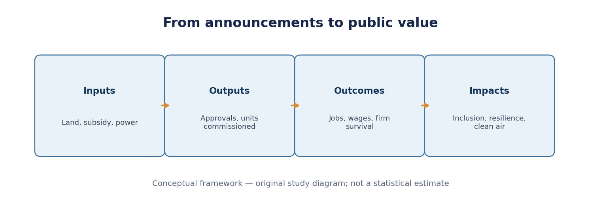

Paper IV — Economy and Development | Unit II — Telangana Economy | Topic 5
Industry and Service Sectors: Industrial Development, MSMEs, Sick Units, Infrastructure, Industrial Policy, Services, Employment and ICT Policy
Production status: Expanded original study draft. Not independently academically approved.
Exact official syllabus wording (commission-hosted Group I scheme and syllabus, corroborated against Notification 02/2024 reproduction): “Industry and Service sectors: Industrial development; Structure and growth of industrial sector, Micro Small and Medium Enterprises (MSME) sector , Revival of sick industries; Industrial infrastructure- Power; Industrial Policy of Telangana; Structure and growth of service sector; employment trends in Industry and Service sectors; Information and Communication Technology (ICT) Policy of Telangana.”
Syllabus-to-chapter map
| Official syllabus component | Detailed notes | Examination emphasis |
|---|---|---|
| Industrial development | §§1, 3, 14 | Historical evolution, clusters and regional imbalance |
| Structure and growth of industry | §§2–3 | GSVA/GSDP, manufacturing, construction, output vs employment |
| MSME sector | §§4, 13 | 2025 classification, credit, payments, 2024 Telangana policy |
| Revival of sick industries | §7 | Viability, TIHCL, restructuring and IBC |
| Industrial infrastructure—power | §§6, 12 | TGIIC, parks, electricity reliability, logistics, pollution |
| Industrial Policy of Telangana | §§5, 15 | TS-iPASS, T-IDEA, T-PRIDE, sectoral policy |
| Structure and growth of services | §§8, 11 | IT/ITeS, GCCs, trade, health, finance and logistics |
| Employment trends in both sectors | §9 | NITI Aayog dated evidence, gender, rural–urban, job quality |
| ICT Policy of Telangana | §10 | Second ICT Policy 2021–2026, digital inclusion, institutions |
| Integrated critical appraisal | §§13–16 | Public subsidy, sustainability, regional convergence |
Topic summary
Telangana combines advanced manufacturing, especially life sciences and precision engineering, with a large services economy anchored by Hyderabad's IT/ITeS, finance, professional services and global capability centres. Industrial and services development reinforce one another through research, design, logistics, testing, energy and finance. Telangana's TS-iPASS Act, 2014 seeks time-bound industrial approvals; T-IDEA and T-PRIDE address investment and inclusion; the 2024 MSME policy targets enterprise formation and growth; TIHCL addresses stressed micro and small manufacturers. The Second ICT Policy 2021–2026 promotes technology-led growth, but targets are not automatically achievements. NITI Aayog's 2025 study reports that services accounted for 62.4% of Telangana GSVA and 34.8% of its workforce in 2023–24. This gap, together with rural–urban and gender disparities, demonstrates that output expansion alone does not guarantee broad employment. Reliable power, environmental safeguards, prompt payments, viable regional clusters and demand-linked skilling are essential. Policy performance should be measured by operating firms, real wages, enterprise survival, regional inclusion and sustainability, not merely announced investment.
How to study
Read standalone quick revision, then the sixteen detailed sections and three diagrams. Attempt thirty original MCQs without viewing the explanations. Practise six structured mains answers with the blueprints. Recheck the dated source register before the examination, because policies and economic estimates change.
Standalone Quick Revision — Industry and Services in Telangana
Core analytical frame. Industrial development is the creation of productive capacity and linkages, not merely approval of investment proposals. Industry and services reinforce one another through design, finance, logistics, research, utilities and technology. Examine output, jobs, wages, regional distribution and environmental impacts together.
Accounting distinctions. GSVA is sectoral value added at basic prices; GSDP at market prices adds product taxes and subtracts product subsidies. Current-price growth includes inflation; constant-price growth attempts to remove it. Manufacturing, construction and utilities must not be conflated. A services share of output is not the same as a services share of employment.
Historical pattern. Hyderabad inherited research, engineering, public-sector, defence and pharmaceutical strengths, later reinforced by IT and business services. Agglomeration creates efficiency but can deepen concentration. The state must link the metropolitan ecosystem to viable district clusters rather than duplicating identical parks everywhere.
MSME thresholds from 1 April 2025. Micro: investment ≤ ₹2.5 crore and turnover ≤ ₹10 crore. Small: ≤ ₹25 crore and ≤ ₹100 crore. Medium: ≤ ₹125 crore and ≤ ₹500 crore. These are central classification thresholds, not a special Telangana policy.
Telangana policy instruments. TS-iPASS Act, 2014 (Act 3 of 2014): coordinated, time-bound industrial clearances, with statutory duties and accountability. T-IDEA: industrial incentives; T-PRIDE: inclusive entrepreneurship. Telangana MSME Policy 2024: enterprise development, including support for SHG-to-enterprise transitions. Second ICT Policy 2021–2026: technology ecosystem, digital empowerment and export/employment ambitions. Next-Gen Life Sciences Policy 2026–2030: sector-specific strategic targets, not achievements.
Sick units. Distinguish temporary liquidity stress from structural unviability. TIHCL is a Telangana government-promoted NBFC focused on diagnosing and rehabilitating stressed micro and small manufacturing units. Assess revived firms' survival, jobs retained and recovery of public funds, not merely loans sanctioned.
Industrial infrastructure. Serviced land + reliable power + water + roads + logistics + waste treatment + worker housing. TGIIC is associated with industrial infrastructure; older sources use TSIIC. Industrial parks succeed when operating firms, utilities and supply chains function, not when land is merely allotted.
Services structure. Includes IT/ITeS, GCCs, trade, transport, hospitality, finance, real estate, professional services, health and education. NITI Aayog's 2025 report records 62.4% Telangana services GSVA share in 2023–24 and 34.8% workforce share. Different denominators; do not relabel as 2025–26.
Employment gaps. NITI Aayog's 2023–24 analysis reports services employment shares of 18.9% rural and 66.6% urban, and 41.5% male and 23.9% female. This demonstrates barriers to inclusive services-led development. Track real wages, formal contracts, hours, occupational safety and gender participation.
ICT and innovation institutions. T-Hub: startup ecosystem. T-Works: prototyping. WE Hub: women entrepreneurship. TASK: employability and skilling. GCCs can perform engineering, finance and research, not only routine outsourcing. Export receipts, value added and jobs are different measurements.
Three essential mains contrasts. (1) Announced versus realised investment; (2) high-productivity output versus mass employment; (3) rapid approval versus continued regulatory compliance. Add a fourth: metropolitan agglomeration versus district convergence.
Current-affairs discipline. Telangana MSME Policy 2024, revised central MSME classification 2025, Next-Gen Life Sciences Policy 2026–2030 and NITI Aayog 2025 services analysis are dated sources. For each, distinguish law, policy, target, budget estimate and observed result. Avoid unsupported latest 2026 industrial shares from unreviewed tables.
Five-line conclusion for mains. Telangana has strong life sciences, engineering, IT and business services. Clusters generate innovation and productivity, but benefits are uneven. MSMEs need prompt payments, finance, technology and market access. Regional centres need skills, utilities and viable logistics. Success is measured by decent jobs, surviving firms, real incomes, inclusion and environmental quality.
Detailed Textbook Notes — Industry and Service Sectors in Telangana
1. Industrial development: historical inheritance, structural change and the Telangana problem
Industrial development is the sustained expansion of productive capacity, technological capability, employment and value addition in manufacturing, mining, electricity and related activities. It is not synonymous with signing investment memoranda or announcing industrial parks. A plant creates development when it becomes operational, sources inputs, employs people at productive wages, pays suppliers, innovates and complies with environmental rules. Industrialisation also changes the occupational structure: workers can move from low-productivity agriculture to manufacturing and higher-productivity services. Whether this transition is inclusive depends on the skills demanded, where factories locate and who owns land and capital.
The Hyderabad State economy combined older artisanal occupations, agriculture and trade with selected modern industrial establishments. The Nizam-era rail network, public works, engineering and manufacturing created a limited urban industrial base; much of the hinterland remained agrarian. During the united Andhra Pradesh period, public-sector enterprises, defence and research organisations, pharmaceuticals, bulk drugs, engineering, electronics and eventually software services clustered around Hyderabad. Location advantages reinforced one another: educated workers attracted firms; firms attracted universities, suppliers, airports and specialised services. This is an agglomeration economy, not evidence that all districts developed equally. Telangana's industrial question after 2014 was therefore both how to scale its established metropolitan clusters and how to spread productive opportunities beyond them.
Manufacturing differs from a service in the nature of output, but the two increasingly form one value chain. A pharmaceutical plant buys laboratory testing, finance, logistics, IT, design and regulatory consulting. A software enterprise depends on electricity, real estate, devices, telecommunications and transport. Industrial policy that treats manufacturing and services as competing silos overlooks these interdependencies. The relevant analytical distinction is between a production ecosystem and a mere list of sectors. Strong ecosystems reduce search costs, support specialisation and make technology adoption easier; weak ones strand infrastructure or produce isolated enclaves.
Industrial growth can raise output without proportionate employment when production is capital-intensive or automated. It can also generate jobs indirectly in construction, packaging, maintenance and retail. An examination answer should distinguish direct jobs from indirect and induced employment, and investment intentions from realised investment. Telangana's pharmaceuticals and aerospace illustrate knowledge-intensive production; textiles, food processing and small engineering offer different labour intensities. An inclusive industrial strategy needs a portfolio rather than assuming one prestigious sector can absorb the state's diverse workforce.
Debate and consequence. Proponents of cluster-led growth argue that concentration raises productivity and attracts global investors. Critics emphasise land costs, migration pressure, congestion, ecological burden and exclusion of peripheral districts. The appropriate test is not whether Hyderabad remains successful, but whether supply chains, training, transport and viable regional clusters connect that success to the wider state. The 2025–26 and 2026–27 economic data should be compared at consistent prices and sector definitions before declaring a structural transformation.
2. Measuring industry: GSDP, GSVA, manufacturing and the informal sector
Gross State Domestic Product (GSDP) measures the value of final output produced within the state, while Gross State Value Added (GSVA) is the sum of value added by economic activities before product taxes less product subsidies. In simplified terms, GSDP at market prices = total GSVA at basic prices + taxes on products − subsidies on products. A sector's percentage share of GSVA is not necessarily its share of GSDP, and a current-price increase may reflect inflation rather than higher real production. Comparisons should specify year, base year, current versus constant prices, and whether a number is advance, provisional or revised.
Under standard national accounts, the secondary sector commonly groups manufacturing, construction and electricity/gas/water-related utilities, but industry may be defined differently in different official tables. Mining and quarrying may be grouped with primary activities in some sector summaries even though it is an industrial activity in common usage. Construction is part of the secondary sector but not manufacturing. A correct answer identifies the table's classification rather than silently transferring percentages between categories. For example, a surge in residential construction can lift the secondary sector without a corresponding increase in factory output or exports.
The Annual Survey of Industries (ASI) describes registered factory activity, whereas informal and unincorporated establishments require different survey instruments. Udyam registrations identify enterprises under the formal MSME registration system, not a census of all currently operating establishments; duplicate, inactive or newly registered units can distort casual interpretation. The Index of Industrial Production (IIP) is an index of short-run production volume for specified sectors and products, not a direct measure of GSDP. Credit disbursement, industrial power consumption, factory employment and export orders provide complementary but incomplete signals. Triangulation is necessary because each series measures a different mechanism.
Telangana's industrial structure includes pharmaceutical and life-sciences manufacturing, engineering and defence-linked production, textiles, food processing, electronics, chemicals, minerals, electricity and construction. Hyderabad's research and service ecosystem creates high-value manufacturing links, while districts differ sharply in access to suppliers, transport and skilled workers. To study trend, compare real manufacturing GSVA, factory jobs, enterprise survival, real wages, exports, and environmental intensity over a common interval. A rising output share accompanied by falling job share may indicate productivity improvement or labour displacement; the welfare conclusion requires wage and employment evidence.
Analytical warning. Never state that Telangana's services share of GSVA is identical to its services employment share. NITI Aayog's 2025 services analysis reports a 62.4% services GSVA share in 2023–24, whereas its labour analysis reports 34.8% services workforce share for the same year. Different denominators explain the difference, and the gap reveals unequal average labour productivity across sectors rather than a contradiction.
3. Industrial composition: pharmaceuticals, life sciences, engineering, textiles and food processing
Telangana's life-sciences ecosystem is anchored in Hyderabad's research institutions, laboratories, pharmaceutical manufacturers, regulatory expertise and specialised workforce. Genome Valley illustrates how research, testing, manufacturing and logistics can co-locate. Pharmaceutical exports earn foreign exchange and generate skilled work, but bulk-drug production also raises concerns about effluent treatment, water quality, occupational safety and compliance costs. The policy challenge is to move up the value chain into biologics, medical devices, advanced manufacturing and research while ensuring environmental safeguards are real rather than merely documentary.
The Telangana Next-Gen Life Sciences Policy 2026–2030 is an official policy document, not proof that its investment and job targets have been achieved. Its stated mission includes ambitious investment and employment goals; those are forward-looking commitments. The policy identifies existing strengths such as Genome Valley, the Medical Devices Park and pharmaceutical manufacturing. For examination purposes distinguish stock (existing firms and facilities), flow (investment actually realised in a period), and target (what a policy seeks). A target of new jobs is not an observed payroll count. This discipline prevents promotional language from becoming a false statistical claim.
Aerospace, defence and precision engineering rely on quality assurance, specialised materials, certification and long procurement cycles. Their value chains can support small component suppliers, but entry barriers are high. The presence of defence laboratories or major plants does not automatically ensure that local MSMEs receive orders; vendor-development programmes, testing facilities and predictable payment are essential. In electronics, assembly creates jobs but the deeper developmental gain comes from design, component ecosystems, repair capabilities and domestic intellectual property. Policy should reward actual local value addition rather than merely final assembly.
Textiles and apparel can absorb workers with different skill profiles, especially women, but face volatile demand, water and energy costs, and pressure to meet buyer standards. Food processing links agriculture to industry through grading, cold chains, quality certification and marketing; it can reduce post-harvest losses only when procurement and storage are commercially viable. A processing park without farmer aggregation, refrigerated logistics or dependable buyers may remain underutilised. Telangana's district strategy should therefore match industries to local crops, labour availability and transport, rather than mechanically replicating a metropolitan pharmaceutical cluster.
Contrasting approaches. Sector-specific incentives may overcome coordination failures in promising industries, yet they can privilege politically connected firms and lock public funds into technologies that change quickly. Broad public goods—reliable power, roads, vocational skills, predictable regulation, clean water and commercial dispute resolution—benefit more enterprises. A balanced strategy combines transparent sectoral support with common infrastructure and measurable sunset conditions. The public should be able to ask whether each subsidy produced additional jobs, technology or exports that would not otherwise have occurred.
4. MSMEs: definitions, economic functions, constraints and formalisation
Micro, small and medium enterprises (MSMEs) are classified in India using composite investment and annual turnover thresholds. From 1 April 2025, the revised limits are: micro, investment up to ₹2.5 crore and turnover up to ₹10 crore; small, ₹25 crore and ₹100 crore; medium, ₹125 crore and ₹500 crore. Both conditions matter; one must not mix a 2025 threshold with older 2020 limits. Classification is administrative and may change by notification, while the broader economic concept of a small enterprise depends on its scale, capabilities and market power.
MSMEs matter because they diversify local production, connect larger manufacturers to suppliers, provide entry routes for first-generation entrepreneurs and create jobs outside large cities. A small machine shop may fabricate parts for a pharmaceutical line; a food unit may source from farmer groups; a digital firm may serve exporters. Yet a high count of microenterprises can coexist with low wages and stagnant productivity. The policy objective is not simply to maximise registrations but to enable productive firms to survive, grow and graduate from micro to small and medium scale without losing essential market access.
Credit constraints arise because banks lack reliable information about cash flows, collateral and order quality. Delayed payments by buyers turn profitable orders into liquidity crises. The MSMED Act, 2006 provides a legal framework concerning delayed payments and facilitation mechanisms; Udyam registration supports formal identification. Credit guarantees, invoice discounting and digital receivables platforms can address particular risks, but do not substitute for viable demand. A subsidised loan cannot rescue a business whose product has no market. Technology adoption requires worker training, maintenance, standardisation and market access, not only the purchase of a machine.
Telangana's MSME Policy 2024, published by the Industries and Commerce Department, frames support across establishment, operations and growth, including the transition of self-help groups into enterprises. Official policy language should be distinguished from implementation outcomes. For women, SC and ST entrepreneurs, barriers can include asset ownership, networks, mobility, collateral and access to industrial land. Dedicated parks and incentives may lower some barriers, but outcomes depend on actual plot allotment, finance, utilities, childcare, safety and buyer relationships. Evaluate distributional success through enterprise survival and owner earnings, not merely sanction letters.
Trade-off. Excessive compliance burdens can drive micro units into informality; blanket exemptions can weaken worker safety and environmental protection. A proportionate risk-based system, assisted compliance, simplified filing and credible inspections can support both formalisation and public safeguards. The best MSME policy combines patient finance, market access, shared testing facilities, cluster services and prompt payments with transparent accountability for subsidies.
5. Telangana industrial policy: T-IDEA, T-PRIDE and the statutory TG-iPASS architecture
Telangana's 2014–15 industrial-policy framework sought to improve the investment climate while attracting manufacturing across priority sectors. T-IDEA (Telangana State Industrial Development and Entrepreneur Advancement) provides an incentive framework; T-PRIDE focuses on entrepreneurship among historically disadvantaged groups. The schemes and their eligibility conditions should be read from applicable government orders rather than treating an old promotional brochure as a perpetual entitlement. Incentives may include components linked to capital investment, taxes, power or other costs, but rates and eligibility depend on the specific notification and category.
The Telangana State Industrial Project Approval and Self-Certification System Act, 2014 (Act 3 of 2014) created a time-bound single-window framework. Its core innovation is to treat clearance delays as an administrative accountability problem: departments receive prescribed timelines, applications can be processed through a common mechanism, and responsible officials may face consequences for unjustified delay. The official portal states that approval limits vary from one to thirty days depending on the approval. Some project categories have shorter targets; one should not assert that every environmental, land or building permission is universally approved in fifteen days.
Self-certification changes the timing and allocation of regulatory risk. It can reduce rent-seeking and uncertainty for honest investors, but it does not abolish environmental, fire, labour or land-use laws. Effective implementation requires post-approval inspection based on risk, credible penalties for false declarations, interdepartmental data exchange and accessible grievance redress. Deemed approval provisions must be interpreted within the statutory framework and should not be used to suggest that safety obligations vanish. An industrial policy can be investor-friendly and protective of the public if it makes compliance predictable rather than optional.
The 2024 MSME policy adds an enterprise-lifecycle perspective to the earlier approval-and-incentive architecture. Telangana's 2026–2030 life-sciences policy is sector-specific. These instruments operate at different levels: general regulatory facilitation, cross-sector enterprise support and targeted industrial development. Their coexistence is not evidence that one repealed the others. Students should identify the date and legal character of each instrument, and check later government orders for amendments before writing that a particular benefit is presently payable.
Critical appraisal. Speed of clearance is a process metric; development impact is an outcome metric. An evaluation should ask whether approved units commenced operations, survived, employed local workers, paid wages, met pollution standards and generated taxable activity. Time-bound approval without post-approval monitoring can produce external costs. Conversely, discretionary inspections without published standards can recreate the delays that the statute was designed to remove.
6. Industrial infrastructure: land, parks, corridors, logistics and power
Industrial infrastructure is a package of complementary services: serviced land, internal roads, reliable electricity, water, drainage, effluent treatment, waste disposal, telecommunications, logistics and housing for workers. The economic logic is coordination: an individual small firm cannot efficiently build a common effluent-treatment plant, freight terminal or skill centre, but an industrial cluster can share them. Industrial infrastructure corporations help assemble and service sites; Telangana's infrastructure corporation is commonly referred to as TGIIC following the state's TG nomenclature changes, while older sources use TSIIC. Always check the date and exact name in the source.
Industrial parks differ in purpose. A general park offers common utilities; a sector-specific park may need testing, clean-room standards or specialised waste management; an export-oriented cluster needs customs, ports or airport connectivity; a food park needs cold storage and aggregation. Land is not the only binding constraint. An apparently low-cost plot far from skilled workers and buyers can be commercially expensive once transport, turnover and recruitment are included. Infrastructure should be assessed by occupancy, actual operating units, power reliability, logistics costs and environmental performance rather than acres announced.
Electricity is a decisive input for manufacturing. Grid reliability affects machinery uptime, process quality and the need for diesel backup. Tariff structure matters as much as nominal supply: demand charges, time-of-day rates, cross-subsidies and power quality can shape competitiveness. DISCOM finances, transmission capacity, generation mix and renewable integration influence long-term reliability. Industrial policy must balance affordable power for firms with the fiscal sustainability of distribution companies and social objectives such as household and agricultural access. Free power commitments in other sectors cannot be treated as proof of free industrial power.
Water-intensive industry creates another trade-off. Pharmaceuticals, textiles and chemicals may require treatment and monitoring, while households and farmers also demand water. Common effluent-treatment plants work only with appropriate pre-treatment, transparent monitoring and enforcement. Logistics investments—warehousing, road-rail connections, freight terminals—can improve export competitiveness but may displace communities or alter land values. Land acquisition and industrial-area governance require lawful compensation, rehabilitation and grievance mechanisms. Public infrastructure can crowd in private investment, but poorly selected projects create stranded public assets.
Telangana example. Hyderabad's airport connectivity, knowledge institutions and established industrial clusters create agglomeration benefits, while Warangal and other district nodes offer possibilities for decentralisation. A credible corridor strategy links firms to suppliers and workers through real transport, housing and training rather than declaring a corridor on a map. Assess power, water and land together; improving one without the others often fails to raise production.
7. Sick industries: diagnosis, revival, insolvency and public-interest tests
An industrial unit may become stressed because of delayed receivables, poor management, outdated machinery, high input costs, demand collapse, litigation, excessive leverage or infrastructure failure. Financial sickness and economic non-viability are different. A temporarily cash-constrained but competitive firm may recover with working capital; a firm whose product is permanently uncompetitive may not recover even after repeated subsidies. Diagnosis should distinguish operational profitability, debt service, market prospects, technological needs and promoter governance before recommending intervention.
The Telangana Industrial Health Clinic Limited (TIHCL) is a government-promoted NBFC focused on rehabilitation of sick and incipiently sick micro and small manufacturing enterprises. Its official materials describe diagnostic studies, advisory services, margin support, critical-amount funding and approaches to lenders for restructuring. Its existence is relevant because ordinary commercial credit often arrives too late to prevent a small firm from becoming a non-performing asset. A specialised institution can combine technical assessment with finance and follow-up; the public-policy question is whether it selects viable cases and recovers support rather than perpetuating losses.
National insolvency architecture includes the Insolvency and Bankruptcy Code, 2016 for eligible corporate debtors, but insolvency is not identical to industrial rehabilitation. A viable business may be rescued through restructuring, new ownership or sale; assets of a non-viable business may be redeployed. Workers' claims, environmental liabilities, secured creditors and public revenue have different legal interests. The earlier Sick Industrial Companies framework is historically examinable but should not be presented as the current principal corporate-resolution regime after the IBC transition.
A sound revival package has a sequence: establish root cause; independently test commercial viability; negotiate creditor and promoter contribution; restructure liabilities and operations; set measurable milestones; monitor cash flow; and close or resolve cases that fail. A government should avoid giving repeated concessional finance to promoters who divert funds or refuse reform. Conversely, rapid liquidation can destroy viable local supplier networks and livelihoods when distress is caused by a temporary shock. Rehabilitation is justified by recoverable economic value, not sentiment alone.
Evaluation indicators. Report the share of assisted units still operating after two or three years, employment retained, private credit mobilised, overdue dues cleared and public funds recovered. Counts of applications or assistance sanctioned do not measure revival success. For women-led and SC/ST-led enterprises, transparent eligibility and tailored advisory services can reduce exclusion without abandoning commercial scrutiny.
8. Structure and growth of services: diversity beyond IT
Services comprise trade, hotels and restaurants, transport, storage, communications, finance, insurance, real estate, professional services, public administration, education, health and other personal or community activities. These activities differ in skill intensity, productivity, formality and exportability. A software export contract can generate high foreign exchange earnings; a neighbourhood repair service creates local employment; public health services improve human capability even where their output is not sold at market prices. Treating the service sector as a single homogeneous high-income category is a conceptual error.
Telangana's services-led growth reflects Hyderabad's IT/ITeS and global-capability-centre ecosystem, financial and professional services, real estate, trade, hospitality, transport, education and health. NITI Aayog's services-sector study reports that services accounted for 62.4% of Telangana's GSVA in 2023–24, compared with 52.8% in 2011–12. These are dated shares in a specified source, not automatically the 2025–26 shares. Changes in statistical base years and revisions can affect comparison. A high services share may indicate economic dynamism but also dependence on one metropolitan market and exposure to global demand shocks.
The services value chain extends beyond office jobs. IT firms buy security, catering, transport, cleaning, construction, power and telecom services. Hospitals and universities employ clinicians and teachers as well as technicians, administrators and suppliers. Tourism supports accommodation, food, local crafts and mobility. Logistics enables both manufacturing and retail. Policy should therefore distinguish internationally tradable services, locally consumed market services and publicly provided social services; each requires a different infrastructure and workforce strategy.
Services can grow rapidly without solving the employment problem if output gains accrue mainly to a small highly skilled workforce. Real estate can raise measured value added while housing becomes less affordable. Platform work expands access to customers but may transfer business risks to workers without stable social protection. Finance can deepen productive investment or fuel speculative asset prices. A strong service-sector strategy therefore measures job quality, worker earnings, geographic reach, access for women and environmental impacts alongside GSVA growth.
Debate. Some economists argue India can achieve development through services without following the historical mass-manufacturing route. Others stress that high-productivity tradable services have limited capacity to absorb low-skilled workers and require strong education systems. Telangana's policy should develop both: technology-intensive services for exports and labour-intensive manufacturing, logistics, tourism, health and care services for broader employment.
9. Employment trends: sectoral shares, informality, gender and job quality
The number of workers in a sector is not proportional to that sector's contribution to output. Labour productivity is approximately sectoral real value added divided by workers, though measurement difficulties remain. A state may obtain most of its value added from services while many households depend on agriculture. The transition from agriculture to industry and services can increase average income when workers find better-paying jobs, but migration into insecure informal work is not necessarily an improvement. A sound answer distinguishes employment levels, employment shares, hours worked, real wages and social protection.
NITI Aayog's 2025 state analysis estimates that 34.8% of Telangana's workforce, approximately 6.2 million workers, was employed in services in 2023–24, above the national services workforce share of 29.7%. It also reports sharp rural–urban and gender differences: services employment shares of 18.9% for rural workers versus 66.6% for urban workers, and 41.5% for male workers versus 23.9% for female workers. These figures refer to a particular year and survey-derived analytical source; they are not a count of formal IT employees. Their policy implication is that a services-led state can still have rural employment deficits and gender barriers.
Industry employment includes factory employees, contract workers, construction workers, transport-linked workers and informal workshops. Labour-intensive manufacturing may absorb migrants from agriculture, but precarious contracts, unsafe conditions and weak collective bargaining can suppress welfare gains. Construction often expands quickly during urbanisation, yet it is cyclical and exposed to injury risks. MSMEs can create local jobs but may lack the margins to provide formal benefits. Industrial policy therefore needs labour inspection, occupational safety, apprenticeship pathways, access to insurance and predictable dispute resolution alongside investor facilitation.
Telangana's TASK and skill institutions aim to bridge the gap between educational qualifications and employable capabilities. Effective skilling starts from verified employer demand, uses practical assessments, offers placement and retention support, and tracks earnings after training. A certificate without a job is an output, not an employment outcome. For women, mobility, safe accommodation, childcare and workplace safety may matter as much as technical skills. For rural youth, secondary-city jobs can reduce the need for costly migration if local enterprises and transport networks are viable.
Policy test. Compare industrial and service employment by gender, rural–urban location, caste and district; track formal contracts, social security, earnings and hours; then compare those indicators with sectoral GSVA. High growth with stagnant real wages calls for different remedies than low growth with rising productivity. Employment trends must never be inferred from investment MoUs alone.
10. Telangana ICT Policy 2021–2026: objectives, institutions and digital inclusion
The Telangana Second ICT Policy 2021–2026, published by the state, set out a vision for information technology, IT-enabled services, innovation and digital empowerment. Its policy period matters: the 2021 document is a historical and policy-framework source, not proof that every target was achieved by October 2026 or that no successor policy exists. The policy promoted expansion of the technology ecosystem, employment, entrepreneurship, digital public services and access beyond Hyderabad. A policy target for exports or jobs is an aspiration until supported by a subsequent official outcome series.
IT and ITeS differ: software product development, engineering services, business-process services, customer operations, data centres and research functions have different skill requirements and value chains. Global Capability Centres (GCCs) may undertake finance, engineering, analytics and research for multinational enterprises; they can generate skilled employment but remain sensitive to global corporate decisions. Export earnings measure services sold abroad; they are not identical to the value added created in Telangana or to the state's total services GSVA. Some exported services are delivered from multiple locations, and exchange-rate changes can affect rupee export values.
Telangana's ecosystem includes T-Hub for startup support, T-Works for prototyping, WE Hub for women entrepreneurship, TASK for employability and research-to-innovation networks. Each has a different role. Incubation provides mentoring, networks and access to capital; prototyping provides equipment and technical capability; skills programmes improve worker readiness. Counting incubated startups without tracking survival, revenue, patents or employment can exaggerate outcomes. A stronger evaluation uses matched comparisons and records how many firms achieve repeat customers and viable margins.
Digital inclusion requires affordable connectivity, local-language services, accessible design, cyber security and digital literacy. A portal that exists online is not automatically accessible to rural women, persons with disabilities or households with intermittent connectivity. Digital governance can reduce transaction costs and leakage, but also creates privacy, exclusion and algorithmic-bias risks. The state's ICT strategy should therefore pair technology adoption with grievance redress, offline alternatives where necessary and responsible data governance.
Forward-looking caution. AI infrastructure, cloud computing and data centres may expand demand for power, water, specialised talent and cyber resilience. The state's 2024 public communication about AI-city ambitions and 2030 export targets is a dated policy statement, not realised investment or employment. Students should separate announced targets, signed commitments, commissioned facilities and observed jobs in every current-affairs answer.
11. Innovation, startups, GCCs and the industrial–service nexus
Innovation is the commercial application of new products, processes, business models or organisational methods. It can occur in a small textile unit improving energy efficiency as well as in a laboratory developing a new medicine. Research institutions create knowledge, but commercialisation requires intellectual-property management, prototyping, regulatory testing, production finance, customers and supply chains. The journey from invention to scalable business is risky; incubators and public laboratories address some coordination and information failures but cannot guarantee demand.
Telangana's Hyderabad ecosystem combines universities, laboratories, multinational technology companies, pharmaceuticals, medical devices and entrepreneurs. Knowledge spillovers occur when skilled workers change firms, suppliers learn from demanding customers and universities collaborate with industry. Such spillovers justify some public support because the innovating firm cannot capture all benefits. However, subsidies can also crowd out private investment or reward projects that would have proceeded anyway. Additionality—what changed because of the public programme—is the key evaluation question.
GCCs are significant because they increasingly handle product engineering, analytics, cyber security, finance and research rather than only routine back-office functions. They can raise demand for skilled graduates and managerial capabilities. Yet they may concentrate high-wage work in Hyderabad and increase housing pressure. To extend benefits to secondary cities, policy needs reliable broadband, transport, educational quality, urban amenities and employer confidence. Announcing a new IT tower without anchor tenants and talent pipelines is not a substitute for ecosystem formation.
Startups and MSMEs face different finance problems. A high-growth software startup may seek equity because cash flows are uncertain and assets are intangible; a machine shop may need working capital against receivables; a laboratory may need long-term equipment finance and regulatory support. Applying one financing instrument to all three is inefficient. Public procurement can create demand for innovation, but transparent tendering, open standards and prompt payment are necessary to avoid favouritism.
Inclusive innovation. WE Hub and district-level entrepreneurship initiatives are relevant to barriers faced by women and first-generation founders. But mentoring must be complemented by property rights, safe mobility, credit, childcare and market contracts. Measure inclusion through funded and surviving enterprises, founder control and earnings, not only attendance at workshops.
12. Power and sustainability: energy transition, industrial competitiveness and environmental justice
Industrial energy demand links economic growth to climate policy. Electricity enables cleaner production where it replaces diesel or inefficient combustion, but grid carbon intensity, reliability and price determine net effects. Renewable energy integration requires transmission, balancing capacity, storage and demand flexibility. Energy efficiency often yields the cheapest immediate gain: better motors, process heat recovery, insulation, audits and efficient refrigeration reduce both emissions and operating costs. However, firms may underinvest because of credit constraints, short payback expectations or lack of technical expertise.
Power tariffs distribute costs among industrial, commercial, agricultural and residential consumers. Cross-subsidies can advance equity but may raise costs for power-intensive firms; indiscriminate subsidies can undermine DISCOM finances and maintenance. A robust industrial policy recognises that reliability, quality and predictable pricing matter more than headline tariff promises. Outages damage temperature-sensitive pharmaceutical batches and precision manufacturing, while voltage fluctuations can reduce equipment life. Shared infrastructure and transparent service standards are therefore productive investments.
Industrial environmental regulation covers emissions, effluents, hazardous waste, occupational exposure and land-use impacts. Pollution control is not simply a hurdle to investment: unchecked contamination imposes health and livelihood costs on communities and can undermine export market access. The precautionary and polluter-pays principles help frame regulatory choices. Common effluent treatment can lower compliance costs for smaller firms, but only if monitoring is credible and participating units pre-treat wastes as required. Digital self-reporting should supplement, not replace, independent sampling.
Data centres and AI infrastructure raise new questions because their local employment intensity may be modest relative to land, electricity and cooling needs. They can nevertheless improve digital resilience and attract related services. Evaluation should compare tax revenue, direct and indirect jobs, grid investments, water use and opportunity cost of land. Policy should avoid assuming that every high-investment project is high-employment or low-impact.
Telangana relevance. Life-sciences manufacturing, textiles and growing digital infrastructure create distinct energy and water profiles. District-level environmental carrying capacity should shape industrial zoning. Cleaner production, energy audits, wastewater recycling and public disclosure can support competitiveness and environmental justice simultaneously, provided enforcement is independent and penalties credible.
13. Industrial finance, incentives and the public-expenditure test
Industrial finance includes promoter equity, retained earnings, bank term loans, working capital, venture capital, development finance and supplier credit. Each instrument finances a different risk. A factory's land and machinery need long-term capital; raw materials and payroll need working capital; research and new products may need patient risk capital. Mismatched finance—such as using short-term borrowing for long-lived assets—creates refinancing risk. Banks also face information asymmetry, especially for small firms with weak accounting systems.
Governments offer industrial incentives to compensate for infrastructure gaps, promote new technologies, support lagging regions or address externalities. Yet a subsidy transfers public resources and must have a counterfactual justification. If a firm would have invested without the incentive, the state may simply have reduced private costs without gaining additional jobs. Subsidy competition between states can erode revenue without increasing national investment. Transparent eligibility, independent evaluation, sunset clauses and clawback provisions for non-performance can improve accountability.
The state's fiscal capacity matters. Industrial land concessions, power subsidies, tax reimbursements and infrastructure spending have direct or opportunity costs. A complete cost–benefit appraisal considers employment, wages, environmental remediation, displacement, local procurement and tax revenues over time. Announced investment amounts do not equal net social benefit. Capital-intensive plants may yield high productivity and exports but relatively few jobs; labour-intensive units may produce broader employment but require more skill support and compliance assistance.
For MSMEs, delayed payment is often more damaging than the headline interest rate. A viable supplier waiting months for a large customer's invoice may fail despite having a full order book. Receivables financing, procurement discipline, mediation and enforceable payment timelines can therefore be more effective than new grant schemes. TIHCL's diagnostic approach is relevant to cases where liquidity distress can be distinguished from permanent commercial failure.
Critical appraisal. Industrial policy should publish outcome dashboards separating approved, commenced, operational and closed units. It should also disclose employment by gender and district, public assistance paid, environmental compliance and grievance outcomes. Without this, governments can claim success from approvals while taxpayers cannot verify additionality.
14. Regional balance: Hyderabad concentration, tier-two cities and spatial equity
Agglomeration economies make firms cluster in Hyderabad because labour, suppliers, airports, universities, finance and customers are concentrated there. This raises productivity and creates a self-reinforcing innovation ecosystem. But concentration can widen regional income gaps and increase congestion, housing costs, groundwater stress and commuting time. Balanced regional development does not mean distributing identical factories equally across districts; it means ensuring that residents outside the capital can access productive opportunities suited to local comparative advantages.
Warangal, Karimnagar, Nizamabad, Khammam and other urban centres differ in industrial history, educational institutions and transport connectivity. A tier-two technology initiative must offer employers a credible talent pipeline, reliable connectivity, secure premises and urban amenities. A food-processing cluster must connect to crop supplies, cold chains, certification and buyers. A textile cluster needs worker housing, effluent treatment and stable power. Choosing projects based on local inputs and demand is more durable than politically allocating showcase parks.
Industrial corridors can connect regional nodes to metropolitan markets, but their success depends on last-mile logistics and land governance. Land acquisition may raise landowners' wealth while displacing tenants, artisans or agricultural labourers who receive less compensation. Environmental assessments, rehabilitation, public hearings and transparent plot allocation are therefore part of development, not obstacles external to it. Public infrastructure can improve access, but its distributional impact should be monitored at household level.
NITI Aayog's 2025 Telangana services analysis highlights opportunities for expansion in secondary cities and skill programmes. The state should evaluate whether new investments generate local supplier contracts and jobs or merely relocate workers from Hyderabad. Decentralisation can reduce metropolitan pressure, but dispersed small facilities may sacrifice scale economies. A network of specialised, connected regional hubs is a more plausible middle path.
Mains argument. The aim is productive convergence, not artificial uniformity. Compare district enterprise density, employment, wages, logistics access, women’s participation and pollution burden. A balanced policy couples cluster specialisation with social infrastructure and accountable governance.
15. Current policy developments: distinguishing 2024, 2025 and 2026 evidence
The Telangana MSME Policy 2024 is an official state policy document. Its purpose is to support enterprise formation, growth and inclusion, including transitions from SHGs to viable enterprises. The Union Ministry of MSME's 2025 revision increased investment and turnover limits for classification; this is a central legal/administrative change, not a Telangana-only threshold. A correct answer dates both instruments and explains their different scopes. The 2014 TS-iPASS law and 2015 industrial-policy framework remain important historically and institutionally, but their exact operative provisions must be read with amendments and later government orders.
The Telangana Second ICT Policy 2021–2026 is an official policy-period document. Its stated objectives and export or employment ambitions are not measured outcomes. On 27 August 2024, Invest Telangana published the IT minister's ambitions for AI product engineering and a large expansion of IT exports by 2030; these are policy statements, not audited realised export totals. A 2026–2030 Next-Gen Life Sciences Policy provides another sector-specific strategic direction. Its investment and employment numbers are goals; students should not present them as achieved by October 2026.
NITI Aayog's 2025 services-sector analysis supplies dated comparative data: 62.4% services GSVA share in Telangana in 2023–24, and 34.8% services workforce share in the same year. These figures illuminate structural change but should not be silently labelled 2025–26 data. The Telangana government's Socio-Economic Outlook 2026 is available through its official reports portal, but detailed latest industrial sub-sector tables have not been fully audited in this production run. Consequently, this chapter does not manufacture unverified current-price shares or investment counts.
The state industrial-approval dashboard contains frequently updated operational information. Because such dashboards change daily, figures must be recorded with an observation date and their denominator. Processing time for one department is not equivalent to total project clearance time, and a processed application is not necessarily an operating factory. The same caution applies to IT export announcements and employment projections. A credible current-affairs paragraph combines the date, issuing institution, precise claim, its status (law, budget, policy, target or observed outcome), and why it matters.
Exam practice. For any new announcement, ask four questions: What changed legally? Who implements it? What funding or incentives are actually authorised? What independently observable outcome would prove success? This turns current affairs into analysis rather than a chronology of slogans.
16. Integrated assessment: industry–services linkages, employment and sustainable growth
Telangana's economic transformation is best analysed as a connected system. Research institutions and IT services help pharmaceutical and engineering firms innovate; manufacturers create demand for logistics, design, finance and testing; industrial parks need electricity, water and transport; workers need housing, education, healthcare and safe mobility. A weakness in one part of this network can constrain the whole system. The objective is not simply to raise the percentage of manufacturing or services in GSVA, but to create productive employment, resilient firms and broad-based improvements in living standards.
A multi-dimensional scorecard should distinguish inputs, outputs, outcomes and impacts. Inputs include industrial land, power infrastructure and public incentives. Outputs include approvals, factories commissioned and training completed. Outcomes include operational firms, export contracts, real wages, stable jobs and supplier productivity. Impacts include poverty reduction, reduced regional gaps, gender inclusion and lower pollution exposure. Counting only investment announcements confuses intentions with outcomes and makes accountability impossible.
The central policy tension is between efficiency and inclusion. Agglomeration around Hyderabad creates strong productivity gains, but can exclude distant districts. Highly automated factories may raise exports without large direct payrolls; labour-intensive units may employ more people but face global competition. Incentives can attract investment yet burden public finances; rapid approvals can lower corruption yet require strong safety monitoring. These are genuine trade-offs, not reasons to abandon industrial policy. Good institutions disclose costs, consult affected groups and adjust programmes when evidence shows weak additionality.
An effective agenda would strengthen MSME payments and technology adoption, evaluate TIHCL-supported revivals, maintain predictable TS-iPASS administration, invest in power quality and shared pollution control, connect secondary cities to markets, and align TASK and other skilling initiatives with verified vacancies. It would also support women entrepreneurs through childcare, transport, finance and procurement access. Environmental monitoring and land governance should be treated as productive public goods rather than afterthoughts.
Conclusion. Telangana's industrial and services success must be judged by the quality and distribution of economic opportunities. The decisive question for Group I analysis is not whether the state can attract capital or host advanced technology—it can—but whether its institutions convert those strengths into durable enterprises, decent work, regional convergence, fiscal prudence and environmental sustainability.
Visual Learning — Three Original Diagrams
1. Industry–services production ecosystem

Manufacturing and services are complements. Research, finance and logistics raise factory productivity; factory demand sustains service suppliers.
2. MSME lifecycle and policy institutions

Registration, working capital, innovation and stress resolution require different policy instruments. A credit subsidy cannot substitute for buyers or technology.
3. Investment announcement to development impact

Approval and infrastructure inputs must be followed through to operational outcomes and public welfare impacts.
High-value comparative table
| Concept | What it measures | What it does not prove |
|---|---|---|
| Investment MoU | Intention to invest | Commissioned factory or jobs |
| Industrial clearance | Regulatory process | Actual production |
| IT exports | Reported service exports | All workers' wages or district inclusion |
| Sectoral GSVA share | Value-added composition | Workforce composition |
| Udyam registration | Enterprise identification | Survival and profitability |
| TIHCL loan sanctioned | Revival assistance | Successful sustained rehabilitation |
| Policy target | Intended future outcome | Achievement at the time of announcement |
30 Original Practice MCQs — Answers and Explanations
Provenance: Original exam-style practice. No question is represented as an official TGPSC PYQ.
MCQ 1. Which statistic best measures the real expansion of factory production rather than changes in prices?
A. Nominal factory turnover
B. Constant-price manufacturing GSVA
C. Number of signed MoUs
D. Industrial land allotted
Correct answer: B. Constant-price manufacturing value added controls for price changes and measures production more directly; approvals and land are inputs or intentions.
MCQ 2. A rise in construction GSVA necessarily implies what about manufacturing GSVA?
A. It rises identically
B. It doubles
C. Nothing definite
D. It becomes negative
Correct answer: C. Construction and manufacturing are separate economic activities; secondary-sector growth can be construction-led.
MCQ 3. Which relationship between GSDP and GSVA is correct?
A. GSDP equals GSVA plus product taxes less product subsidies
B. GSDP equals employment times wages
C. GSVA includes all product taxes
D. GSVA always exceeds GSDP
Correct answer: A. GSDP at market prices reconciles sectoral basic-price GSVA with net product taxes.
MCQ 4. The revised micro-enterprise investment threshold effective April 2025 is?
A. ₹1 crore
B. ₹2.5 crore
C. ₹10 crore
D. ₹25 crore
Correct answer: B. The central 2025 revision increased the micro investment limit to ₹2.5 crore, with turnover limit ₹10 crore; both conditions apply.
MCQ 5. Under revised 2025 classification, which pair corresponds to a medium enterprise upper limit?
A. ₹25 crore investment and ₹100 crore turnover
B. ₹50 crore and ₹250 crore
C. ₹125 crore and ₹500 crore
D. ₹2.5 crore and ₹10 crore
Correct answer: C. The central composite limits for medium enterprises became ₹125 crore investment and ₹500 crore turnover.
MCQ 6. What is the primary institutional purpose of TS-iPASS?
A. Fix agricultural minimum support prices
B. Provide time-bound coordinated industrial clearances
C. Regulate foreign exchange
D. Replace all environmental laws
Correct answer: B. The 2014 Telangana statute coordinates permissions and timelines; it does not repeal safety and environmental obligations.
MCQ 7. Which statement about deemed approval is most defensible?
A. It always cancels environmental obligations
B. It applies identically to every licence
C. It must be interpreted under the applicable statute and approval category
D. It guarantees factory profitability
Correct answer: C. The scope and conditions of deemed approvals depend on law; regulatory duties remain applicable.
MCQ 8. T-IDEA is principally associated with?
A. Telangana industrial incentives and enterprise development
B. Crop insurance claims
C. University examinations
D. Police recruitment
Correct answer: A. T-IDEA is the Telangana State Industrial Development and Entrepreneur Advancement incentive framework.
MCQ 9. Which Telangana institution focuses on rehabilitation of stressed micro and small manufacturing units?
A. Election Commission
B. Telangana Industrial Health Clinic Limited
C. State Public Service Commission
D. Central Board of Film Certification
Correct answer: B. TIHCL is a state-promoted NBFC offering diagnostic and financial approaches for potentially viable stressed manufacturing MSMEs.
MCQ 10. Which distinction is essential when assessing sick industrial units?
A. Temporary liquidity distress versus structural non-viability
B. Factory colour versus location
C. Number of directors versus workers
D. Private versus public signage
Correct answer: A. Revival finance may work for a commercially viable firm facing temporary cash-flow stress, not for permanently uncompetitive production.
MCQ 11. What does an increase in IT export receipts establish directly?
A. All workers earn more
B. Exports of specified services rose in reported value
C. Manufacturing output doubled
D. Every district benefited equally
Correct answer: B. Export receipts do not alone reveal job quality, district distribution, real value added or wage growth.
MCQ 12. NITI Aayog's 2025 analysis reported Telangana services GSVA share in 2023–24 as?
A. 34.8%
B. 62.4%
C. 18.9%
D. 29.7%
Correct answer: B. The 62.4% figure refers to services share in GSVA; 34.8% refers to the services workforce share.
MCQ 13. NITI Aayog's services workforce share for Telangana in 2023–24 was approximately?
A. 62.4%
B. 52.8%
C. 34.8%
D. 66.6%
Correct answer: C. The reported services employment share is 34.8%, illustrating that output and workforce shares have different denominators.
MCQ 14. Which factor most directly creates agglomeration economies?
A. Distance from suppliers
B. Concentration of specialised labour and complementary firms
C. Random allotment of plots
D. Universal wage controls
Correct answer: B. Knowledge spillovers, labour pooling and supplier specialisation reduce costs in clusters.
MCQ 15. Which observation best tests whether an industrial park succeeded?
A. Acres notified
B. Number of ribbon cuttings
C. Operational units, jobs and utility performance
D. Number of press releases
Correct answer: C. Outputs and outcomes, rather than announcements, reveal whether serviced land translated into productive activity.
MCQ 16. Which service activity is not necessarily an IT export?
A. Hospital care
B. Software engineering contract for foreign client
C. Cloud services sold abroad
D. Remote analytics export
Correct answer: A. Hospital care is a service but need not be an IT export; services include healthcare, education, transport and retail.
MCQ 17. Which indicator most directly measures quality of new jobs?
A. Number of applications for approvals
B. Real wages, security and hours
C. Planned capital expenditure
D. Number of IT towers
Correct answer: B. Job quality requires compensation, stability, safety and social protection, not merely project or building counts.
MCQ 18. The Telangana Second ICT Policy's stated period is?
A. 2014–2019
B. 2017–2022
C. 2021–2026
D. 2026–2036
Correct answer: C. The official Second ICT Policy is dated 2021–2026; policy goals must not be mistaken for achieved outcomes.
MCQ 19. Which statement about Telangana Next-Gen Life Sciences Policy 2026–2030 is correct?
A. Its job targets are already measured achievements
B. It is a sector-specific strategic policy with forward-looking targets
C. It abolishes TS-iPASS
D. It classifies all MSMEs nationally
Correct answer: B. The 2026–2030 life-sciences document expresses ambitions and incentives; achievement requires separate observed data.
MCQ 20. Which of the following is an industrial–service linkage?
A. Pharma manufacturing purchases regulatory testing and logistics
B. Industry and services never interact
C. IT firms require no electricity
D. Logistics does not affect exports
Correct answer: A. Manufacturing firms purchase business services, and services depend on industrial infrastructure and equipment.
MCQ 21. Which financial instrument best matches an innovative early-stage software product with uncertain cash flow?
A. Only mortgage-backed term loan
B. Patient risk equity
C. Mandatory agricultural crop loan
D. Government salary advance
Correct answer: B. Equity can absorb early-stage commercial risk, unlike fixed repayment obligations for firms without stable revenues.
MCQ 22. Which challenge commonly harms viable MSMEs despite a strong order book?
A. Prompt payment
B. Delayed buyer receivables
C. Excess inventory turnover
D. Predictable cash conversion
Correct answer: B. Delayed receivables create liquidity shortages and can cause defaults even when underlying orders are profitable.
MCQ 23. A public subsidy should be evaluated for?
A. Additional outcomes beyond what would happen without it
B. Press coverage only
C. Number of ceremonies
D. Political popularity alone
Correct answer: A. Additionality asks whether public support induced incremental jobs, investment or innovation rather than subsidising inevitable activity.
MCQ 24. Which industrial input is most sensitive to both reliability and quality of power?
A. Machine uptime and process consistency
B. Colour of corporate logo
C. Tax return font
D. Distance to a bank branch
Correct answer: A. Voltage quality and outages affect equipment, production continuity and product quality.
MCQ 25. Why may a common effluent treatment plant fail?
A. Industrial units pre-treat waste adequately
B. Inadequate monitoring and incompatible untreated waste streams
C. Transparent discharge records
D. Effective compliance inspections
Correct answer: B. Shared treatment requires compatible inputs, pre-treatment, monitoring and enforcement; infrastructure alone does not guarantee environmental compliance.
MCQ 26. Which claim about a GCC is accurate?
A. It can perform engineering, finance, analytics and research
B. It is legally identical to a factory
C. It must export physical goods
D. It automatically provides district-wide employment
Correct answer: A. Modern GCCs perform varied knowledge-intensive functions; regional and job effects require evidence.
MCQ 27. What is the most appropriate district industrial strategy?
A. Replicate the same pharmaceutical park everywhere
B. Match local skills, inputs, logistics and demand to viable clusters
C. Ignore environmental capacity
D. Allocate land without buyer analysis
Correct answer: B. Local comparative advantage and infrastructure determine whether a regional cluster can survive commercially.
MCQ 28. Which group may be excluded even when urban IT employment expands?
A. Rural women without safe transport or suitable skills
B. Only multinational executives
C. All college graduates
D. Every manufacturing worker
Correct answer: A. Geographic, gender, mobility and skills barriers can prevent services-led growth from becoming inclusive.
MCQ 29. What is a valid interpretation of a 2026 policy target for 2030?
A. Already realised in 2026
B. A measurable future ambition, not an observed outcome
C. Proof of fiscal surplus
D. Evidence of full employment
Correct answer: B. A target should be reported with its issuing date and later checked against independently observed progress.
MCQ 30. What is the strongest integrated measure of Telangana's industrial–services transformation?
A. Investment MoUs alone
B. GSVA, firm survival, real wages, inclusion and environmental outcomes
C. Number of industrial park gates
D. Software exports alone
Correct answer: B. A multidimensional assessment connects growth to operational firms, decent work, regional distribution and sustainability.
Mains Answer Blueprints
| Original practice question | Introduction / background | Core measures or causal chain | Critical appraisal | Conclusion |
|---|---|---|---|---|
| Q1 Industrial structure and inclusive development | Hyderabad inheritance, production ecosystem | GSVA vs employment; sector mix; TS-iPASS and infrastructure | Capital intensity, concentration, environment | District clusters, real wages, outcome dashboard |
| Q2 MSMEs and 2024 policy | Entrepreneurship and supplier linkages | 2025 thresholds; 2024 state policy; credit and market access | Payment delays, policy additionality, compliance | Survival, inclusion and graduation |
| Q3 Industrial policy and TS-iPASS | Cost of discretionary approvals | 2014 Act; time limits; incentives | Post-approval safety, non-operational units | Accountability, measurable jobs |
| Q4 Sick-industry revival | Temporary stress versus unviability | TIHCL diagnosis, finance and IBC | Moral hazard, workers and environmental liabilities | Viability-tested revival |
| Q5 Services growth and jobs | Dated NITI output and workforce shares | Hyderabad agglomeration, diverse services | Rural–urban/gender gaps, insecure work | Demand-linked skilling and regional reach |
| Q6 ICT policy and sustainability | 2021–2026 ICT framework | Innovation institutions, GCCs, manufacturing linkages | Digital divide, energy, privacy, unverified targets | Inclusive and responsible digital transformation |
Answer structure: Introduce a Telangana-specific fact or institutional context; identify causes/objectives; explain measures and mechanisms; compare benefits and limitations; conclude with two or three measurable reforms. The six complete answers follow this structure and are original practice, not official PYQs.
Original Mains Practice — Complete Model Answers
All six questions are original practice questions. None is represented as an official TGPSC previous-year question.
Q1. Analyse the structure and growth of Telangana's industrial sector and its contribution to inclusive development. (250 words)
Introduction and background. Telangana's industrial development rests on Hyderabad's research, pharmaceuticals, engineering and defence-linked base, complemented by textiles, food processing, electronics, utilities and construction. Industrial growth is meaningful when investment becomes productive capacity and improves livelihoods.
Structural characteristics. Manufacturing, construction and utilities have different output and employment dynamics. Hyderabad benefits from specialised labour, universities, suppliers and airport connectivity, while other districts face weaker logistics and skill networks. Pharmaceuticals and precision engineering generate high value added but may create fewer direct jobs than labour-intensive textiles or food processing.
Growth mechanisms and institutions. The TS-iPASS Act, 2014 seeks time-bound coordinated clearances. T-IDEA incentives, industrial parks and shared infrastructure address investment barriers. The 2024 MSME policy supports smaller enterprises, while the 2026–2030 life-sciences policy targets advanced capabilities. Their effectiveness depends on actual implementation, not announcements.
Critical appraisal. Industrial expansion may coexist with insecure contract work, metropolitan concentration, water stress and delayed MSME payments. Investment MoUs and land allotments cannot substitute for evidence of operating factories, wages, supplier contracts and pollution compliance. Excessive subsidies can also impose fiscal costs.
Way forward and conclusion. Telangana should connect district clusters to markets, provide reliable power and common treatment facilities, enforce prompt payments and link training to vacancies. Publish district-wise operational, employment and environmental outcomes. The ultimate test is whether industrial productivity translates into decent work and broadly shared prosperity.
Q2. Evaluate the role of MSMEs and the Telangana MSME Policy 2024 in entrepreneurship and employment. (250 words)
Introduction and objectives. MSMEs create entry opportunities for first-generation entrepreneurs, supply larger firms and diversify district economies. Their developmental role is broader than their number: productive enterprises can raise local wages, skills and resilience.
Institutional framework. Revised central classification effective April 2025 uses both investment and turnover limits. Micro enterprises have ceilings of ₹2.5 crore and ₹10 crore; small, ₹25 crore and ₹100 crore; medium, ₹125 crore and ₹500 crore. Telangana's 2024 MSME policy addresses enterprise formation, operations and growth, including the transition of self-help groups into businesses.
Constraints and measures. Small firms face collateral shortages, delayed buyer payments, weak bookkeeping, technology gaps, quality certification costs and limited market access. Udyam identification, credit guarantees, receivables finance, shared testing facilities, cluster services and government procurement can mitigate distinct constraints. Women and SC/ST entrepreneurs may additionally require safe transport, industrial space, networks and childcare.
Critical appraisal. Subsidised loans do not solve absent demand; registration totals do not prove survival. Dedicated parks can remain underused without reliable utilities and customers. Excessive compliance burdens encourage informality, whereas blanket exemptions risk unsafe workplaces and pollution.
Conclusion and evaluation. Combine proportionate regulation, prompt-payment enforcement, skill upgrading and market contracts. Track enterprise survival, sales, real earnings, women-led ownership and movement from micro to higher scale. The policy succeeds when viable firms grow sustainably, not when incentives are merely sanctioned.
Q3. Examine the significance and limitations of Telangana's industrial policy and TS-iPASS for investment governance. (250 words)
Background. Industrial investment requires multiple permissions, predictable infrastructure and legal certainty. Delayed or discretionary approvals raise costs and create opportunities for rent-seeking. Telangana responded through its industrial-policy framework and the TS-iPASS Act, 2014.
Objectives and mechanism. TS-iPASS coordinates departmental clearances through a single-window process, self-certification and prescribed time limits. The official portal describes approval timelines ranging from one to thirty days according to category, together with scrutiny and accountability provisions. T-IDEA supports enterprise development through incentives, while T-PRIDE addresses inclusion in entrepreneurship.
Benefits. Predictable timelines can lower transaction costs, improve investor confidence and help smaller firms that lack specialist regulatory teams. Transparent application tracking can reduce informal discretion. Cluster infrastructure and sectoral support may complement faster approvals by solving land, power and supplier problems.
Critical appraisal. A clearance is not an operating factory. Deemed approvals must be interpreted under the applicable statute; environmental, fire, labour and land-use obligations remain relevant. Weak post-approval inspections can shift costs onto communities. Incentives without additionality tests may subsidise projects that would have proceeded anyway.
Conclusion and reforms. Telangana should publish approval-to-operation conversion rates, jobs, wages, compliance and grievance data. Risk-based inspections, transparent land allotment and time-bound appeal mechanisms can protect both investors and citizens. The objective is efficient, lawful industrial governance—not deregulation without accountability.
Q4. Discuss the revival of sick industries in Telangana and the role of specialised institutions. (250 words)
Introduction. A sick industrial unit faces persistent financial or operational distress. Yet distress has different causes: delayed receivables, temporary demand collapse, outdated technology, management failures or permanent loss of competitiveness. Effective revival begins by separating viable enterprises from non-viable ones.
Root causes. MSMEs often lack working-capital buffers, bargaining power and professional financial management. A large buyer's overdue invoice may turn a profitable supplier into a loan defaulter. Poor energy reliability, obsolete machinery or product-quality failures can also erode margins.
Institutions and measures. Telangana Industrial Health Clinic Limited is a state-promoted NBFC focused on stressed micro and small manufacturing units. Its stated services include diagnostic studies, advisory support, margin assistance, critical-amount funding and engagement with lenders. Where appropriate, restructuring can combine promoter contribution, creditor concessions, technology upgrades and milestone-based monitoring.
Critical appraisal. Repeated bailouts may create moral hazard and preserve obsolete capacity. Conversely, premature liquidation can destroy viable supplier networks and jobs. The Insolvency and Bankruptcy Code, 2016 supplies an important corporate-resolution framework, but insolvency proceedings and preventive industrial rehabilitation serve different functions. Workers' dues and environmental liabilities cannot be ignored.
Conclusion. Support should be conditional on independently tested viability, transparent selection and measurable recovery. Assess operational survival after two or three years, jobs retained, overdue payments resolved and public funds recovered. A credible policy rescues productive capability rather than simply rescuing promoters.
Q5. Explain Telangana's services-led growth and the challenges of generating broad-based employment. (250 words)
Introduction and facts. Telangana's services economy includes IT/ITeS, GCCs, finance, trade, logistics, tourism, real estate, education and health. NITI Aayog's 2025 analysis reports a services share of 62.4% in state GSVA in 2023–24, compared with 34.8% of the workforce in services.
Growth drivers. Hyderabad combines skilled labour, universities, digital infrastructure, research and multinational firms. Agglomeration supports knowledge spillovers and high-value exports. Manufacturing also purchases testing, logistics, design and financial services, strengthening cross-sector linkages.
Employment challenge. High-value technology services often require specialised qualifications and cannot automatically absorb all workers leaving agriculture. NITI Aayog reports a services workforce share of 18.9% in rural areas versus 66.6% in urban areas, and 23.9% for women versus 41.5% for men in 2023–24. These differences expose geographic and gender barriers.
Critical appraisal. IT export growth does not prove higher wages for every worker. Real estate expansion can increase housing costs; platform work may be insecure; global demand shifts can affect GCC employment. Training certificates alone do not establish placement or retention.
Conclusion and measures. Strengthen TASK-linked demand-driven skills, safe mobility, childcare, district urban infrastructure and labour-intensive services such as healthcare, logistics and hospitality. Track real earnings, formal employment and district distribution. Services-led growth becomes inclusive when productivity gains are matched by accessible, decent work.
Q6. Critically assess the Telangana ICT Policy and the need to integrate technology, manufacturing and sustainable development. (250 words)
Background and objectives. Telangana's Second ICT Policy 2021–2026 sought to strengthen IT/ITeS, entrepreneurship, digital public services and digital inclusion. Hyderabad's technology ecosystem benefits from T-Hub, T-Works, WE Hub, TASK and the presence of global technology enterprises.
Development mechanisms. Digital services create export earnings and demand for skilled workers. GCCs increasingly perform engineering, analytics, finance and research. Technology also raises manufacturing productivity through process control, design, supply-chain software and quality assurance. Public support for prototyping and skilling can address coordination failures between research and commercialisation.
Limitations and root causes. Technology-led growth may remain concentrated in Hyderabad, excluding rural youth and women without adequate skills, connectivity or safe transport. Startup announcements do not establish survival or revenues. Data centres and AI facilities require substantial power, cooling, cyber security and reliable infrastructure. Digital governance may introduce privacy and exclusion risks.
Critical appraisal. Policy targets must be distinguished from realised exports and employment. The state's 2024 AI-city ambitions and the 2026–2030 life-sciences goals are forward-looking statements, not verified outcomes. Excessive technology subsidies may crowd out basic infrastructure or social services.
Conclusion and way forward. Link ICT strategy to regional skill pipelines, manufacturing suppliers, accessible public services, energy efficiency and responsible data governance. Measure viable firms, innovation outcomes, formal jobs and inclusion rather than event counts. Telangana's technological leadership will be durable only when it raises economy-wide productivity and social welfare.
Official PYQ provenance register
No official MCQ or mains PYQ is reproduced or labelled verified in this chapter. An original TGPSC question-paper scan/PDF and exact question number have not been matched to the chapter's questions. All thirty MCQs and six mains questions are original practice. Future additions must record examination name, paper, year, question number, exact source URL and a manual answer-key audit before being called official.
Authoritative Sources and Audit — Industry and Service Sectors
Audit cut-off: 24 October 2026. This is an internally checked expanded draft, not an independent academic certification. All URLs are primary institutional sources unless specifically marked as secondary syllabus corroboration. The links are supplied for verification, not as a substitute for a subject-expert review. No source page-number citations are used in the student-facing notes.
| ID | Source and date/period | URL | Used for / caution |
|---|---|---|---|
| S01 | TGPSC commission-hosted Group I scheme and syllabus | https://websitenew.tspsc.gov.in/preview/PRESSNOTE/Group-SchemeandSyllabus20220603142210.pdf | Exact syllabus text, also checked against Notification 02/2024 reproduction; original notification PDF still merits direct line-by-line audit. |
| S02 | TGPSC Group I Notification 02/2024 reproduction (secondary) | https://prepshark.in/tgpsc/group-1/syllabus | Confirms Topic 5 wording, not a substitute for the original notification. |
| S03 | Telangana State Portal, State Industrial Policy | https://www.telangana.gov.in/state-industrial-policy/ | 2015 industrial-policy announcement and TS-iPASS context; historical source. |
| S04 | TG-iPASS official portal, About the Act | https://ipass.telangana.gov.in/about.aspx/1000 | TS-iPASS Act 2014, approval timelines and accountability; read with applicable amendments. |
| S05 | TG-iPASS, official downloads | https://ipass.telangana.gov.in/Downloads.aspx | Statute, forms and regulatory material. |
| S06 | Government of Telangana, Telangana MSME Policy 2024 | https://ipass.telangana.gov.in/Industries/Library/MSME%20Policy%20Booklet%20English1.pdf | State policy; original scanned PDF, so precise incentive conditions require direct visual verification. |
| S07 | Telangana state policy catalogue, 2024 MSME policy | https://www.telangana.gov.in/policies/ | Confirms official policy existence and SHG-enterprise focus. |
| S08 | Ministry of MSME, March 2025 newsletter | https://msme.gov.in/sites/default/files/MarchNewsletter2025.pdf | Revised composite classification limits; check current gazette for any later changes. |
| S09 | Telangana Industrial Health Clinic Limited, services | https://tihcl.telangana.gov.in/services.php | Diagnostic studies, revival and financial services for stressed MSMEs. |
| S10 | Telangana Industrial Health Clinic Limited, official portal | https://tihcl.telangana.gov.in/ | Institutional status and mission. |
| S11 | Telangana Second ICT Policy 2021–2026 | https://rich.telangana.gov.in/assets/pdfs/Resources/Telangana-State-2nd-ICT-Policy-2021.pdf | ICT policy period and framework; historical targets not reported as achievements. |
| S12 | NITI Aayog, Telangana services sector analysis, 2025 | https://www.niti.gov.in/node/2029 | Services share of GSVA 2023–24; dated analytical source. |
| S13 | NITI Aayog, Telangana services employment, 2025 | https://www.niti.gov.in/node/2028 | Services workforce share and rural–urban/gender differences for 2023–24. |
| S14 | Telangana official reports catalogue, SEO 2026 | https://www.telangana.gov.in/reports/ | Official latest outlook exists; detailed industry tables not fully audited, so no invented 2026 sub-sector shares. |
| S15 | Invest Telangana, 2026–2030 life-sciences policy | https://invest.telangana.gov.in/policy-life-sciences/ | Current sectoral policy and forward-looking targets; not realised results. |
| S16 | Invest Telangana, 27 August 2024 AI product engineering statement | https://invest.telangana.gov.in/our-goal-is-to-make-hyderabad-a-leader-in-ai-product-engineering-it-minister/ | Dated announcement; 2030 ambitions remain targets. |
| S17 | Invest Telangana, economic overview | https://invest.telangana.gov.in/why-telangana/ | 2025–26 state economic context; site may update, so verify publication metadata. |
| S18 | Invest Telangana, industrial and services investment sectors | https://invest.telangana.gov.in/ | Institutional ecosystem and sector map; promotional content treated cautiously. |
| S19 | Telangana TG-iPASS dashboard, observed October 2026 | https://ipass.telangana.gov.in/UI/TSiPASS/frmSingleWindowDashboard.aspx | Administrative process metrics, not factory output or realised employment. |
| S20 | Telangana State Portal, 2024 electricity-policy announcement | https://www.telangana.gov.in/news/press-releases/2024/01/telangana-government-to-bring-in-new-power-electricity-policy/ | Power policy intentions; not evidence of a subsequently enacted policy. |
Claims checked and qualifications
- Exact syllabus: Commission-hosted Group I syllabus text directly located; Notification 02/2024 corroboration available, but the notification PDF itself has not been fully authenticated line-by-line.
- 2025 MSME thresholds: Central limits recorded with effective-year distinction; precise operative date should be rechecked against Gazette if challenged.
- Services shares: 62.4% GSVA and 34.8% workforce refer to 2023–24 in separate NITI analyses. They must not be relabelled as 2025–26 or 2026–27.
- Industrial incentives: No universal current T-IDEA reimbursement rates asserted; scheme conditions may vary by order and project category.
- TS-iPASS: No claim that all permissions universally have a fifteen-day deadline; approval category matters, and safety laws continue to apply.
- ICT and life-sciences targets: Explicitly identified as targets or announcements, not achieved jobs or exports.
- SEO 2026: Official publication identified, but its full industrial sub-sector tables not exhaustively audited; unsupported latest percentages excluded.
- Official PYQs: Zero claimed. No source paper/question-number provenance established.
- Academic approval: Zero; subject expert, legal currency and independent statistical audit remain pending.